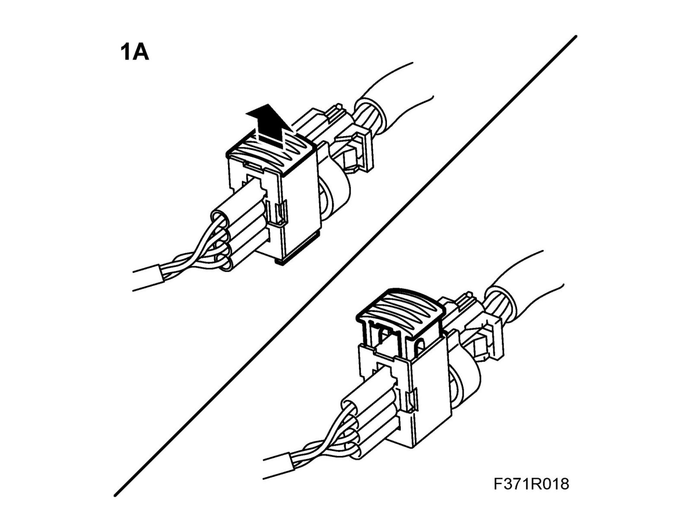
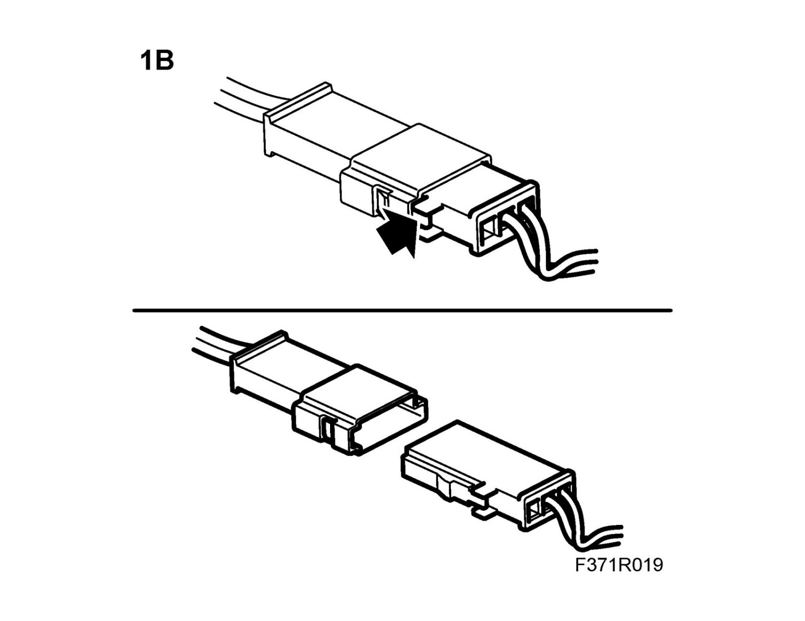
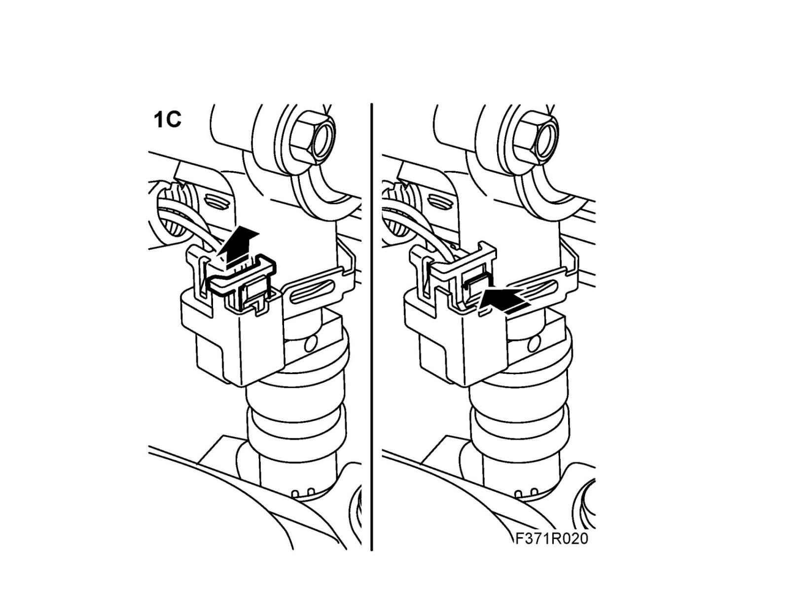
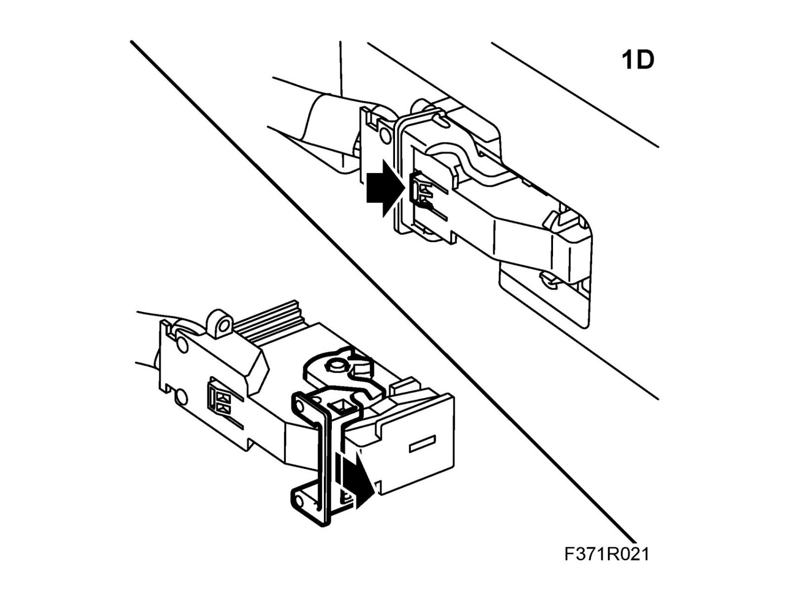
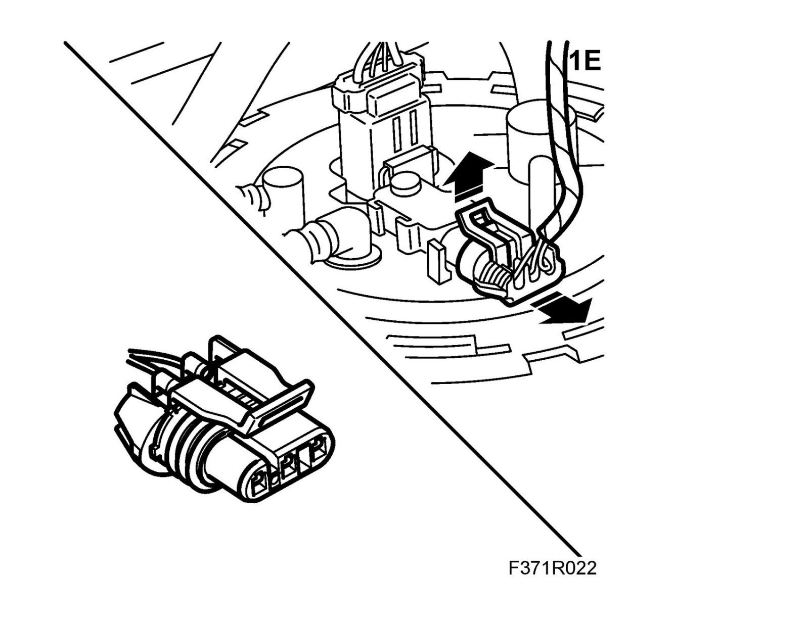
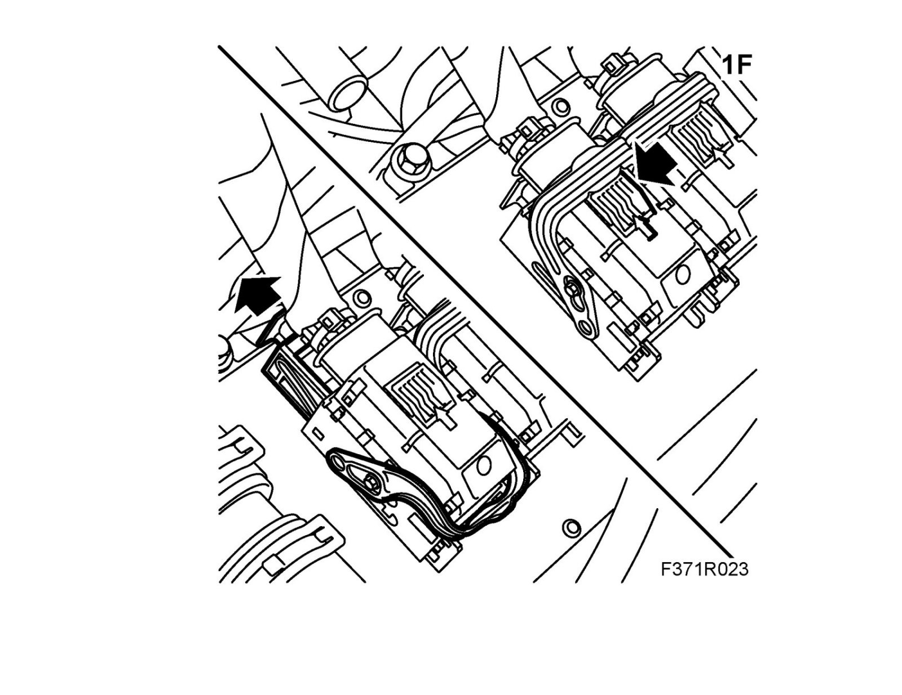
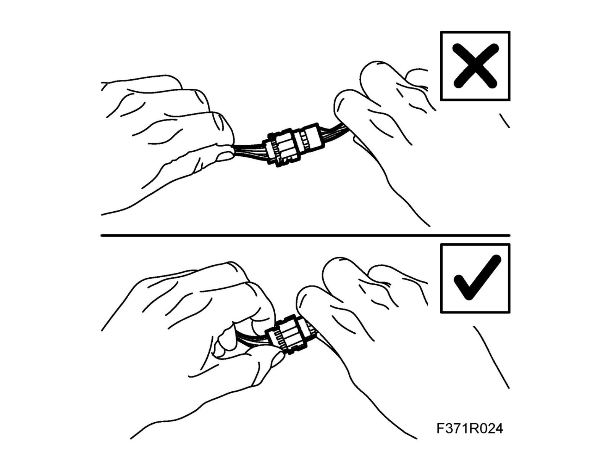
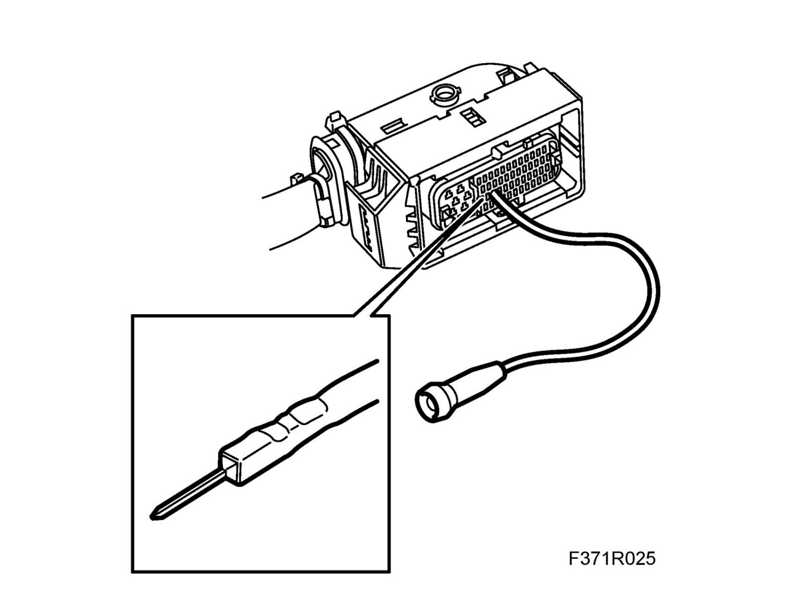
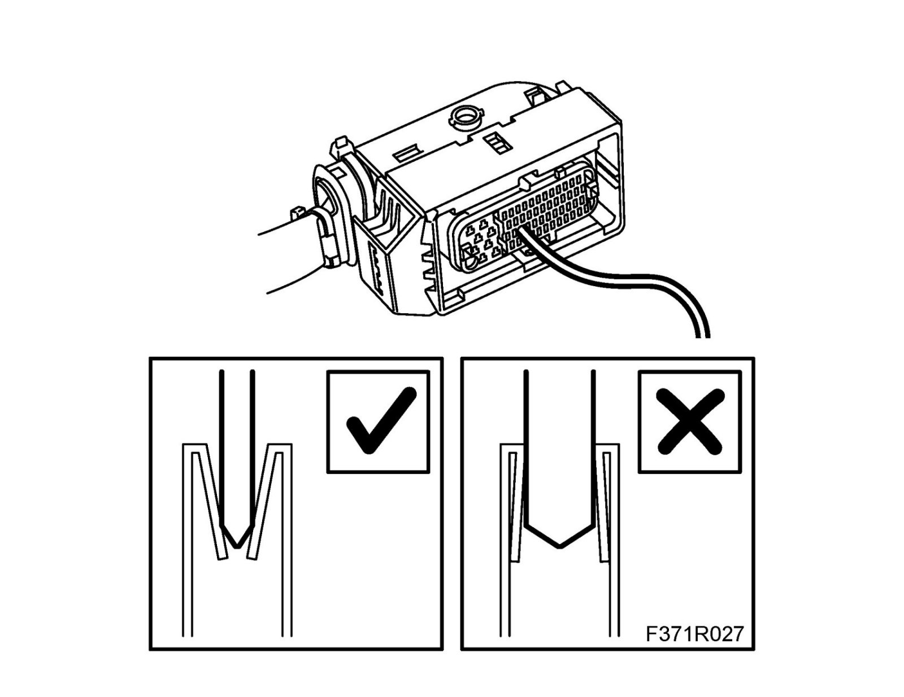
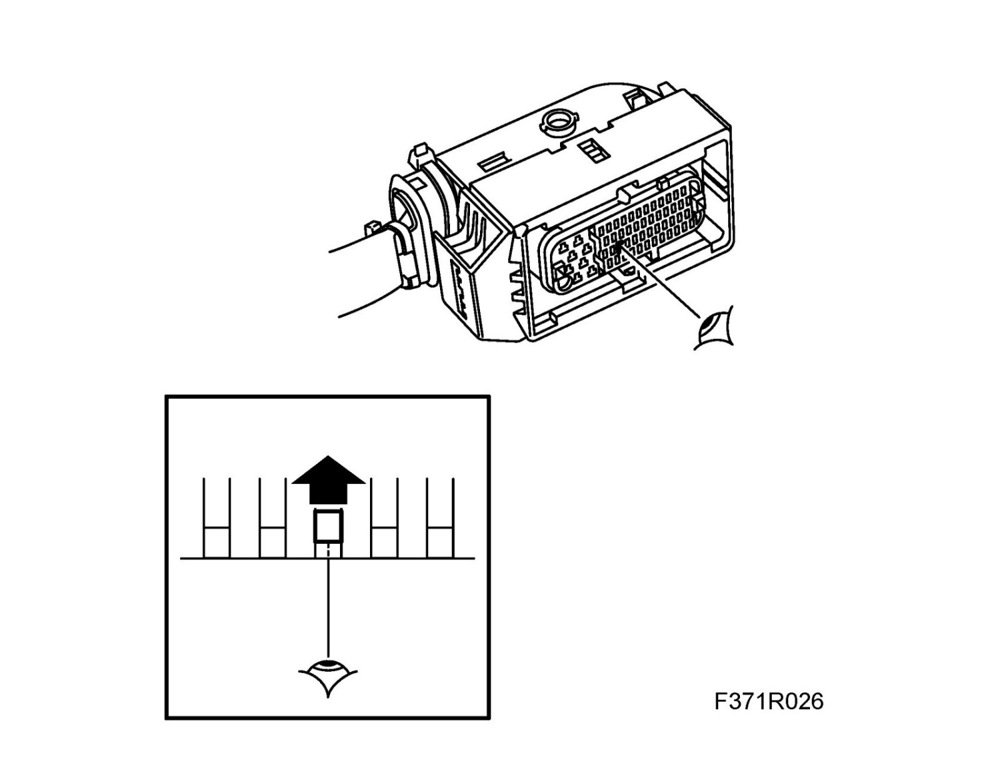

Connectors, Handling and Inspection
Connectors, handling and inspectionHandling
1. When unplugging a connector that has a catch, the catch must be undone first before parting the connector. Make sure the connector catch engages properly when plugging in the connector.
Examples of some of the different types of connector in the car:
1.A. Pull out the sheath to undo the connector catch.
After plugging the connector in, press in the sheath to lock the connector.
Note
Use a small screwdriver to help undo the catch on the connector.

1.B. Press in the catch to release the connector.
Make sure the connector is securely locked when plugged back in.

1.C. Pull out the sheath to undo the connector catch.
After plugging the connector in, press in the sheath to lock the connector.

1.D. Press in the catch on the wire clamp and tip the wire forward.
Plug in the connector and lock it by raising the wire clamp.
Note
Make sure the wire clamp is locked in the correct position, to ensure good contact in the connector.

1.E. Raise the catch to release the connector.
Make sure the connector is securely locked when plugged back in.

1.F. Press in the catch on the connector to release the wire clamp. Release the connector sheath and fold forward the wire clamp.
Note
Using greater force than necessary attempting to fold the wire clamp forward before the sheath has been released can damage the connector.
Plug in the connector and lock it by raising the wire clamp.

2. Ground yourself, by touching the car's body or engine, when unplugging or plugging in the connectors on the car's control modules.
3. Never unplug a connector by pulling the wiring.

4. Never touch the pins on a control module with your hands or clothes.
Important
Incorrect handing or the use of the wrong tool can damage the sleeves in the connector.
Use a test cable (part no. 86 12 731) of the correct size to avoid damaging the sleeves in the connector.
5. When taking measurements, use only probes designed for this purpose to avoid damaging the contacts. Use a test cable (part. no. 86 12 731) of the correct size.

6. For repairs to connectors, the correct special tools and spare parts must be used.
7. The following connectors may not be repaired:
- Screened cables/coaxial cable (e.g. ABS sensor cable)
- Airbag system and pyrotechnic belt pretensioner system
- High-tension cables (e.g. ignition system, xenon headlamps).
Inspection
1. Check that there are no problems with contact on connection.
2. Check contacts, connectors and crimps for oxidation, withdrawn pins and pin clamping force.
Important
Incorrect handing or the use of the wrong tool can damage the sleeves in the connector.
Use a test cable (part no. 86 12 731) of the correct size to avoid damaging the sleeves in the connector.
3. To check the clamping force, use a test cable with the correct size pins (from set 86 12 731).
Note
A test cable with too large pins will damage the sleeves in the connector.
- Insert the test cable pin into the connector to check the pin clamping force. Poor clamping force can cause intermittent contact.

- Check also that the pin is aligned with the other pins in the connector. A pin that is recessed (pushed out) can cause intermittent breaks.

4. Check the wiring and connections for breaks.
5. Check the wiring harness, connectors and ground connections.